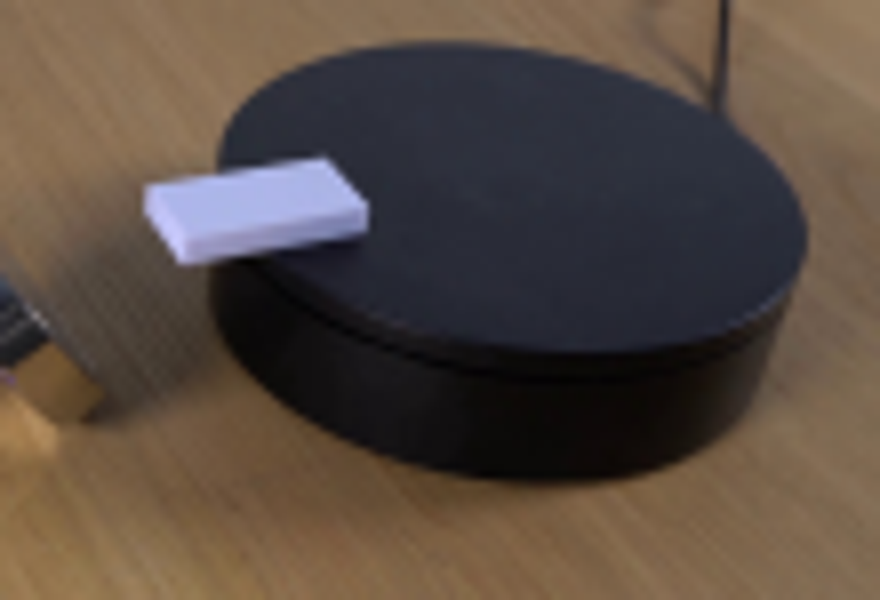
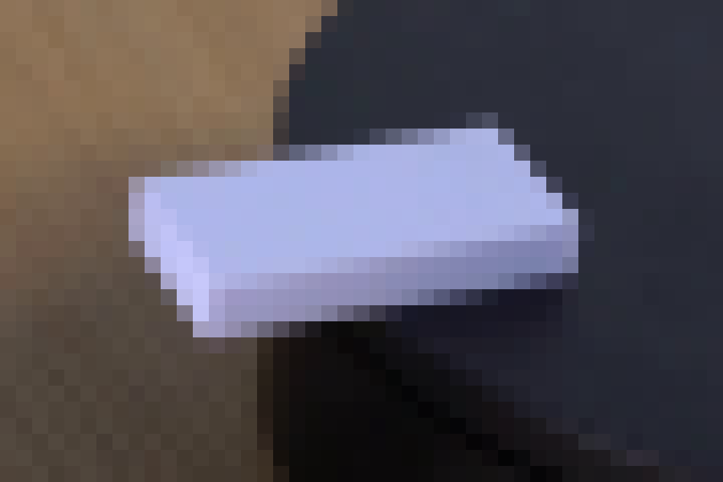
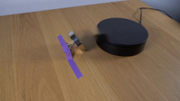
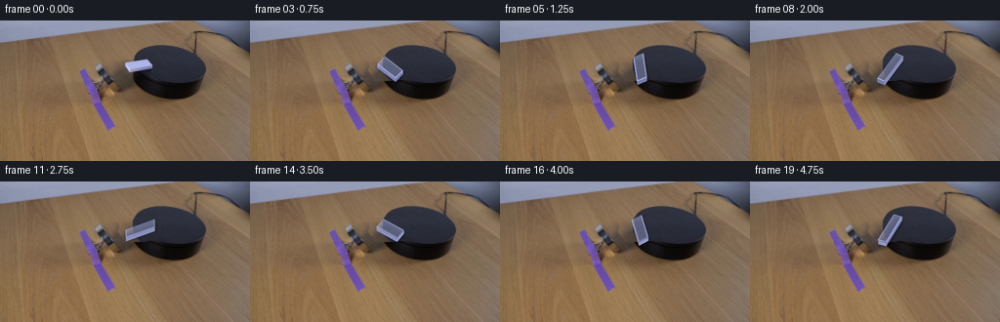
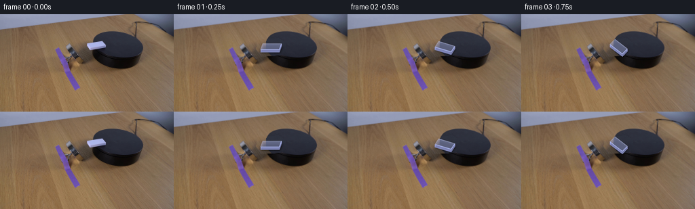

CODING AGENTS AS PIXEL WORLD MODELS
traex/GPT-5.6-Sol · 0094
点击播放 · 原生 RGB 像素
逐轮保存的候选
回放视频、检查图与代码变化。
每份候选均可单独播放。实际图片检查记录在下方工具轨迹中。
候选 01播放与检查图
点击播放 · 原生 RGB 像素

展开代码变化
--- 上一保存版本
+++ 本次保存版本
@@ -0,0 +1,146 @@
+from pathlib import Path
+import math
+import cv2
+import numpy as np
+from PIL import Image, ImageDraw, ImageFilter
+import artifact_io
+
+CASE_DIR = Path(__file__).resolve().parent
+N, H, W = 20, 144, 256
+SS = 4
+
+
+def clean_plate(rgb):
+ """Reconstruct the small patch hidden by the domino in frame zero."""
+ plate = rgb.copy()
+ # This mask includes the softly antialiased fringe of the original domino.
+ remove = np.zeros((H, W), np.uint8)
+ pts = np.array([[123,38], [154,35], [164,42], [165,54],
+ [157,60], [128,62], [121,52]], np.int32)
+ cv2.fillPoly(remove, [pts], 255)
+
+ # Approximate the existing turntable's top and lower rim. These masks are
+ # used only under the removed object; all visible source pixels stay intact.
+ top = np.zeros((H, W), np.uint8)
+ cv2.ellipse(top, (174,45), (38,20), 7, 0, 360, 255, -1,
+ lineType=cv2.LINE_AA)
+ body = np.zeros((H, W), np.uint8)
+ cv2.ellipse(body, (174,51), (38,20), 7, 0, 360, 255, -1,
+ lineType=cv2.LINE_AA)
+
+ yy, xx = np.indices((H, W))
+ m = remove > 0
+ mt = m & (top > 100)
+ ms = m & ~mt & (body > 100)
+ mw = m & ~mt & ~ms
+
+ # The right-hand portions at the same height provide genuine turntable
+ # texture and lighting. The nearby left patch provides genuine wood grain.
+ for y, x in zip(*np.where(mt)):
+ sx = min(W-1, x + 31)
+ plate[y, x] = rgb[y, sx]
+ for y, x in zip(*np.where(ms)):
+ # The lower rim is nearly black, with a mild vertical shading.
+ sy = min(H-1, y + 1)
+ sx = min(W-1, x + 31)
+ col = rgb[sy, sx].astype(np.int16)
+ if col.mean() > 60:
+ col = np.array([22, 20, 20])
+ plate[y, x] = np.clip(col, 0, 255)
+ for y, x in zip(*np.where(mw)):
+ sx = max(0, x - 10)
+ # compensate very slightly for the tabletop's broad illumination slope
+ plate[y, x] = np.clip(rgb[y, sx].astype(np.int16) - 1, 0, 255)
+
+ # Feather just the replacement boundary, without softening the rest.
+ soft = cv2.GaussianBlur(remove, (0,0), .55).astype(np.float32) / 255.0
+ # Keep interior fully replaced.
+ soft[remove > 0] = 1.0
+ out = rgb.astype(np.float32) * (1-soft[...,None]) + plate.astype(np.float32)*soft[...,None]
+ return np.uint8(np.clip(out + .5, 0, 255))
+
+
+def poly(draw, points, fill):
+ draw.polygon([(int(round(x*SS)), int(round(y*SS))) for x,y in points], fill=fill)
+
+
+def object_layer(theta):
+ """Draw a small plastic cuboid projected onto the tabletop."""
+ # Pixel vectors produced by physical half length/width in the table plane.
+ # As theta increases, the apparent motion is clockwise (screen y is down).
+ c, s = math.cos(theta), math.sin(theta)
+ # Camera projection of table coordinates: one unit in world X and Y.
+ ax = np.array([0.967, -0.133])
+ ay = np.array([-0.200, 0.900])
+ u = 15.0 * (c*ax + s*ay) # projected half-length
+ v = 5.0 * (-s*ax + c*ay) # projected half-width
+ center = np.array([143.5, 48.1])
+ # corners around the top, back-left/back-right/front-right/front-left
+ q0 = center-u-v
+ q1 = center+u-v
+ q2 = center+u+v
+ q3 = center-u+v
+ ext = np.array([0.0, 3.8])
+
+ # Separate transparent canvases make a soft contact shadow possible.
+ shadow = Image.new('RGBA', (W*SS,H*SS), (0,0,0,0))
+ sd = ImageDraw.Draw(shadow)
+ shadow_pts = [q0+np.array([1.4,3.0]), q1+np.array([1.4,3.0]),
+ q2+np.array([1.4,4.5]), q3+np.array([1.4,4.5])]
+ poly(sd, shadow_pts, (0,0,0,115))
+ shadow = shadow.filter(ImageFilter.GaussianBlur(1.35*SS))
+
+ layer = Image.new('RGBA', (W*SS,H*SS), (0,0,0,0))
+ d = ImageDraw.Draw(layer)
+ # Extruded side faces. Draw both; shared edge geometry naturally changes
+ # which faces are prominent through a rotation.
+ poly(d, [q3,q2,q2+ext,q3+ext], (126,132,181,255))
+ poly(d, [q2,q1,q1+ext,q2+ext], (117,122,168,255))
+ poly(d, [q0,q3,q3+ext,q0+ext], (146,151,204,255))
+ poly(d, [q1,q0,q0+ext,q1+ext], (139,144,195,255))
+
+ # Top plastic: subtly shaded nested polygons mimic the soft overhead light.
+ poly(d, [q0,q1,q2,q3], (166,177,229,255))
+ # Broad highlight toward the upper-left, kept very subtle at native size.
+ inset = 0.8
+ iu = u * (1-inset/15.0)
+ iv = v * (1-inset/5.0)
+ cc = center + np.array([-0.25,-0.35])
+ poly(d, [cc-iu-iv,cc+iu-iv,cc+iu+iv,cc-iu+iv], (171,182,235,115))
+ # hairline highlights along the two light-facing top edges
+ lw = max(1, SS)
+ d.line([(int(q0[0]*SS),int(q0[1]*SS)),(int(q1[0]*SS),int(q1[1]*SS))],
+ fill=(202,209,248,145), width=lw)
+ d.line([(int(q0[0]*SS),int(q0[1]*SS)),(int(q3[0]*SS),int(q3[1]*SS))],
+ fill=(195,204,246,120), width=lw)
+
+ return shadow, layer
+
+
+def composite(base, overlays):
+ canvas = Image.fromarray(base, 'RGB').convert('RGBA').resize((W*SS,H*SS), Image.Resampling.BICUBIC)
+ for ov in overlays:
+ canvas.alpha_composite(ov)
+ # One high-quality reduction gives natural subpixel edge coverage.
+ return np.asarray(canvas.convert('RGB').resize((W,H), Image.Resampling.LANCZOS), dtype=np.uint8)
+
+
+def generate():
+ first = np.asarray(Image.open(CASE_DIR/'first_frame.png').convert('RGB'), dtype=np.uint8)
+ background = clean_plate(first)
+ frames = [first.copy()]
+ theta0 = math.radians(-7.8)
+ # Constant real-time clockwise rotation: 300 degrees over the 19 intervals.
+ total = math.radians(300.0)
+ for i in range(1, N):
+ theta = theta0 + total * (i/(N-1))
+ shadow, domino = object_layer(theta)
+ frames.append(composite(background, [shadow, domino]))
+ frames = np.stack(frames).astype(np.uint8)
+ assert np.array_equal(frames[0], first)
+ artifact_io.save(frames, CASE_DIR)
+ return frames
+
+
+if __name__ == '__main__':
+ generate()
候选 02播放与检查图
点击播放 · 原生 RGB 像素

展开代码变化
--- 上一保存版本
+++ 本次保存版本
@@ -118,7 +118,7 @@
def composite(base, overlays):
- canvas = Image.fromarray(base, 'RGB').convert('RGBA').resize((W*SS,H*SS), Image.Resampling.BICUBIC)
+ canvas = Image.fromarray(base).convert('RGBA').resize((W*SS,H*SS), Image.Resampling.BICUBIC)
for ov in overlays:
canvas.alpha_composite(ov)
# One high-quality reduction gives natural subpixel edge coverage.
可观测工具轨迹
实际执行的命令与返回图片。
命令 1exit 0
/bin/bash -lc "cat prompt.txt && printf '\\n---RULES---\\n' && cat GENERATION_RULES.md"
命令 2exit 0
/bin/bash -lc "find . -maxdepth 2 -type f -printf '%p %s bytes\\n' | sort"
命令 3exit 0
/bin/bash -lc "python3 - <<'PY'
from PIL import Image
im=Image.open('first_frame.png')
print(im.size, im.mode)
PY
command -v ffmpeg || true
command -v blender || true
command -v convert || true"命令 4exit 0
/bin/bash -lc "sed -n '1,240p' artifact_io.py"
命令 5exit 0
/bin/bash -lc "python3 - <<'PY'
from PIL import Image
im=Image.open('first_frame.png')
im.crop((110,20,220,95)).resize((880,600)).save('.tmp/crop.png')
PY"命令 6exit 0
/bin/bash -lc "python3 - <<'PY'
try:
import cv2; print('cv2',cv2.__version__)
except Exception as e: print(e)
import numpy as np
from PIL import Image
im=np.array(Image.open('first_frame.png'))
for y in range(35,61):
s=''
for x in range(120,166):
p=im[y,x]
# symbols brightness
v=p.mean()
s += 'W' if v>170 else 'w' if v>120 else '+' if v>80 else '.' if v>45 else ' '
print(f'{y:3}',s)
PY"命令 7exit 0
/bin/bash -lc "python3 - <<'PY'
import cv2, numpy as np
im=cv2.imread('first_frame.png')[:,:,::-1]
for y in range(35,60):
xs=[]
for x in range(115,170):
r,g,b=im[y,x]
if b>r*1.03 and b>g*1.02 and (int(r)+g+b)>270: xs.append(x)
if xs: print(y,min(xs),max(xs),len(xs))
PY"命令 8exit 0
/bin/bash -lc "python3 - <<'PY'
from PIL import Image
im=Image.open('first_frame.png')
im.crop((120,32,165,62)).resize((900,600),Image.Resampling.NEAREST).save('.tmp/domino_nearest.png')
PY"命令 9exit 2
/bin/bash -lc "cat > /tmp/test.py <<'PY'
import cv2, numpy as np
im=cv2.imread('first_frame.png')
mask=np.zeros(im.shape[:2],np.uint8)
poly=np.array([[126,40],[154,36],[162,45],[161,54],[153,58],[127,58],[124,50]])
cv2.fillPoly(mask,[poly],255)
# smaller exact perhaps
for rad in [2,3,5]:
out=cv2.inpaint(im,mask,rad,cv2.INPAINT_TELEA)
cv2.imwrite(f'.tmp/inpaint{rad}.png',out)
PY
python3 /tmp/test.py"命令 10exit 0
/bin/bash -lc "cat > .tmp/test.py <<'PY'
import cv2, numpy as np
im=cv2.imread('first_frame.png')
mask=np.zeros(im.shape[:2],np.uint8)
poly=np.array([[126,40],[154,36],[162,45],[161,54],[153,58],[127,58],[124,50]])
cv2.fillPoly(mask,[poly],255)
for rad in [2,3,5]:
out=cv2.inpaint(im,mask,rad,cv2.INPAINT_TELEA)
cv2.imwrite(f'.tmp/inpaint{rad}.png',out)
PY
python3 .tmp/test.py"命令 11exit 0
/bin/bash -lc "cat > generate.py <<'PY'
from pathlib import Path
import math
import cv2
import numpy as np
from PIL import Image, ImageDraw, ImageFilter
import artifact_io
CASE_DIR = Path(__file__).resolve().parent
N, H, W = 20, 144, 256
SS = 4
def clean_plate(rgb):
\"\"\"Reconstruct the small patch hidden by the domino in frame zero.\"\"\"
plate = rgb.copy()
# This mask includes the softly antialiased fringe of the original domino.
remove = np.zeros((H, W), np.uint8)
pts = np.array([[123,38], [154,35], [164,42], [165,54],
[157,60], [128,62], [121,52]], np.int32)
cv2.fillPoly(remove, [pts], 255)
# Approximate the existing turntable's top and lower rim. These masks are
# used only under the removed object; all visible source pixels stay intact.
top = np.zeros((H, W), np.uint8)
cv2.ellipse(top, (174,45), (38,20), 7, 0, 360, 255, -1,
lineType=cv2.LINE_AA)
body = np.zeros((H, W), np.uint8)
cv2.ellipse(body, (174,51), (38,20), 7, 0, 360, 255, -1,
lineType=cv2.LINE_AA)
yy, xx = np.indices((H, W))
m = remove > 0
mt = m & (top > 100)
ms = m & ~mt & (body > 100)
mw = m & ~mt & ~ms
# The right-hand portions at the same height provide genuine turntable
# texture and lighting. The nearby left patch provides genuine wood grain.
for y, x in zip(*np.where(mt)):
sx = min(W-1, x + 31)
plate[y, x] = rgb[y, sx]
for y, x in zip(*np.where(ms)):
# The lower rim is nearly black, with a mild vertical shading.
sy = min(H-1, y + 1)
sx = min(W-1, x + 31)
col = rgb[sy, sx].astype(np.int16)
if col.mean() > 60:
col = np.array([22, 20, 20])
plate[y, x] = np.clip(col, 0, 255)
for y, x in zip(*np.where(mw)):
sx = max(0, x - 10)
# compensate very slightly for the tabletop's broad illumination slope
plate[y, x] = np.clip(rgb[y, sx].astype(np.int16) - 1, 0, 255)
# Feather just the replacement boundary, without softening the rest.
soft = cv2.GaussianBlur(remove, (0,0), .55).astype(np.float32) / 255.0
# Keep interior fully replaced.
soft[remove > 0] = 1.0
out = rgb.astype(np.float32) * (1-soft[...,None]) + plate.astype(np.float32)*soft[...,None]
return np.uint8(np.clip(out + .5, 0, 255))
def poly(draw, points, fill):
draw.polygon([(int(round(x*SS)), int(round(y*SS))) for x,y in points], fill=fill)
def object_layer(theta):
\"\"\"Draw a small plastic cuboid projected onto the tabletop.\"\"\"
# Pixel vectors produced by physical half length/width in the table plane.
# As theta increases, the apparent motion is clockwise (screen y is down).
c, s = math.cos(theta), math.sin(theta)
# Camera projection of table coordinates: one unit in world X and Y.
ax = np.array([0.967, -0.133])
ay = np.array([-0.200, 0.900])
u = 15.0 * (c*ax + s*ay) # projected half-length
v = 5.0 * (-s*ax + c*ay) # projected half-width
center = np.array([143.5, 48.1])
# corners around the top, back-left/back-right/front-right/front-left
q0 = center-u-v
q1 = center+u-v
q2 = center+u+v
q3 = center-u+v
ext = np.array([0.0, 3.8])
# Separate transparent canvases make a soft contact shadow possible.
shadow = Image.new('RGBA', (W*SS,H*SS), (0,0,0,0))
sd = ImageDraw.Draw(shadow)
shadow_pts = [q0+np.array([1.4,3.0]), q1+np.array([1.4,3.0]),
q2+np.array([1.4,4.5]), q3+np.array([1.4,4.5])]
poly(sd, shadow_pts, (0,0,0,115))
shadow = shadow.filter(ImageFilter.GaussianBlur(1.35*SS))
layer = Image.new('RGBA', (W*SS,H*SS), (0,0,0,0))
d = ImageDraw.Draw(layer)
# Extruded side faces. Draw both; shared edge geometry naturally changes
# which faces are prominent through a rotation.
poly(d, [q3,q2,q2+ext,q3+ext], (126,132,181,255))
poly(d, [q2,q1,q1+ext,q2+ext], (117,122,168,255))
poly(d, [q0,q3,q3+ext,q0+ext], (146,151,204,255))
poly(d, [q1,q0,q0+ext,q1+ext], (139,144,195,255))
# Top plastic: subtly shaded nested polygons mimic the soft overhead light.
poly(d, [q0,q1,q2,q3], (166,177,229,255))
# Broad highlight toward the upper-left, kept very subtle at native size.
inset = 0.8
iu = u * (1-inset/15.0)
iv = v * (1-inset/5.0)
cc = center + np.array([-0.25,-0.35])
poly(d, [cc-iu-iv,cc+iu-iv,cc+iu+iv,cc-iu+iv], (171,182,235,115))
# hairline highlights along the two light-facing top edges
lw = max(1, SS)
d.line([(int(q0[0]*SS),int(q0[1]*SS)),(int(q1[0]*SS),int(q1[1]*SS))],
fill=(202,209,248,145), width=lw)
d.line([(int(q0[0]*SS),int(q0[1]*SS)),(int(q3[0]*SS),int(q3[1]*SS))],
fill=(195,204,246,120), width=lw)
return shadow, layer
def composite(base, overlays):
canvas = Image.fromarray(base, 'RGB').convert('RGBA').resize((W*SS,H*SS), Image.Resampling.BICUBIC)
for ov in overlays:
canvas.alpha_composite(ov)
# One high-quality reduction gives natural subpixel edge coverage.
return np.asarray(canvas.convert('RGB').resize((W,H), Image.Resampling.LANCZOS), dtype=np.uint8)
def generate():
first = np.asarray(Image.open(CASE_DIR/'first_frame.png').convert('RGB'), dtype=np.uint8)
background = clean_plate(first)
frames = [first.copy()]
theta0 = math.radians(-7.8)
# Constant real-time clockwise rotation: 300 degrees over the 19 intervals.
total = math.radians(300.0)
for i in range(1, N):
theta = theta0 + total * (i/(N-1))
shadow, domino = object_layer(theta)
frames.append(composite(background, [shadow, domino]))
frames = np.stack(frames).astype(np.uint8)
assert np.array_equal(frames[0], first)
artifact_io.save(frames, CASE_DIR)
return frames
if __name__ == '__main__':
generate()
PY
python3 generate.py
python3 - <<'PY'
import numpy as np
from PIL import Image
z=np.load('pixels.npz')['pixels']
print('pixels',z.shape,z.dtype)
print('first identical',np.array_equal(np.array(Image.open('frames/00.png')),np.array(Image.open('first_frame.png'))))
PY"命令 12exit 0
/bin/bash -lc "python3 - <<'PY'
import generate
from PIL import Image
import numpy as np
im=np.asarray(Image.open('first_frame.png').convert('RGB'))
Image.fromarray(generate.clean_plate(im)).crop((112,28,175,75)).resize((756,564)).save('.tmp/clean_crop.png')
PY"命令 13exit 0
/bin/bash -lc "python3 - <<'PY'
p='generate.py'
s=open(p).read()
s=s.replace(\"Image.fromarray(base, 'RGB').convert('RGBA')\", \"Image.fromarray(base).convert('RGBA')\")
open(p,'w').write(s)
PY
python3 generate.py
python3 - <<'PY'
from pathlib import Path
import numpy as np
from PIL import Image
fs=sorted(Path('frames').glob('*.png'))
arr=np.stack([np.asarray(Image.open(p).convert('RGB')) for p in fs])
first=np.asarray(Image.open('first_frame.png').convert('RGB'))
print(len(fs),arr.shape,arr.dtype,'frame0=',np.array_equal(arr[0],first),'changed=',[int(np.sum(np.any(arr[i]"'!=arr[i-1],axis=2))) for i in range(1,20)])
print('"'outputs',[(p.name,p.stat().st_size) for p in [Path('pixels.npz'),Path('index.html'),Path('inspection.png')]])
PY"视觉工具实际返回图片 1

视觉工具实际返回图片 2

视觉工具实际返回图片 3

视觉工具实际返回图片 4

视觉工具实际返回图片 5

视觉工具实际返回图片 6
保存候选 2 份；完成命令 13 次；可验证图片返回 6 张。原始 API 响应与完整日志保留在本地。